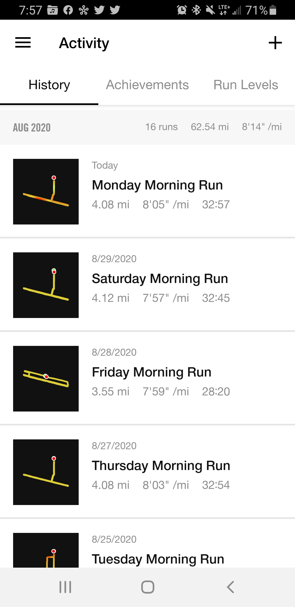
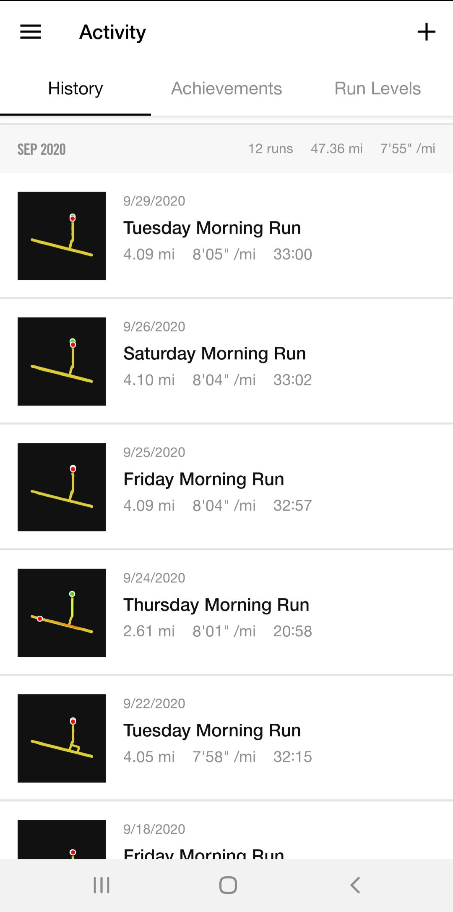
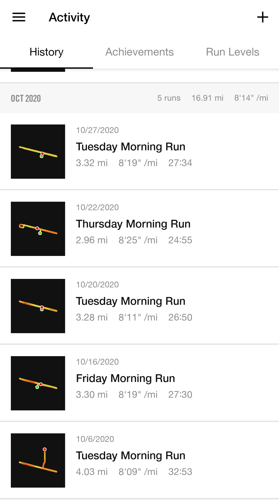

Home
Interests
Non-coding project
To do list
Greet while Running
Resume
LinkedIn
Github
Instagram
Email
I run at the same time range and run the same route since April 2020. I wasn't intending this to be my project and I started this because I wanted to have some happiness in my daily life. However, I see this action is making some impact on my community and to myself so I decided to record this as my non-coding project.
***** Progress *****
As of April 2020, everyone was doing their own business. No greeting or smile back to me.
As of May 2020, some people started greeting or smiled back to me.
As of June 2020, some people started wave their hands from far away.
As of July 2020, most people wave their hands with their smiles, and some are even come down to the street to have some chat. One man clapped his hands and cheered me from his car while I was passing him. A woman told me I made her day. Since we are in the pandemic, I think people are looking for any happiness in their life including me. Some people introduce themselves to me and other runners/walkers. It is small but making a positive community. I've learned from this project that if you stick with anything and keep sharing to outside, possible to give some impacts. It also affected me because I've started to run 5 days a week because it is nice to start my day by seeing my people in the morning. When we greet, we naturally smile at each other and it makes me feels good and gives me hope for the day. This became a big encouragement for me to stay active and also stay positive.
As of August 2020, stayed positive feelings as the previous month. Everyone smiled and seemed like they enjoyed having this little exercise community. Most of people who I see are solid member. So, we remember each other and when they see me coming down towards them, they start to smile, wave and greet. I got addition to my greeting community, and we always say "See you tomorrow!" This interaction encourages me to keep consistant of my running activity and also for him as well I hope. I realized that my purpose of running has been changed. Basically, I want to stay healthy, but I also run because I want to see them. I only could run 16 times because we got a heat wave and also I was busy with moving. And when I got busy moving and stop running about a week, one gentle man said he was worried about me and looking forward to see me. Since we have limitation going out due to COVID-19, having this interaction helps me to stay positive. I can't be more than grateful about this greeting community.
As of September 2020, due to the California wild fire, I coudln't run much and also I didn't see anyone while I was running.
As of October 2020, continue not running much due to the California wild fire.
As of the middle of November 2020, I finally see my activity friends as before and also am able to increase my running frequency. It seems like they also missed the community, so they start waving their hands even though they are still very far away from me. This makes me happy and also want to come back the next day so I can see them again.
***** Record *****
1st month(April):
2nd month(May):
3rd month(June):
4th month(July):
5th month(August):

6th month(September):

7th month(October):

For programming projects, please visit my
Github
page.